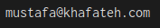

Mustafa Khafateh
Senior Software Engineer
I am a Senior Software Engineer New York City. My primary focus is backend systems, distributed systems architecture, and cybersecurity.
Github
LinkedIn
Blog
